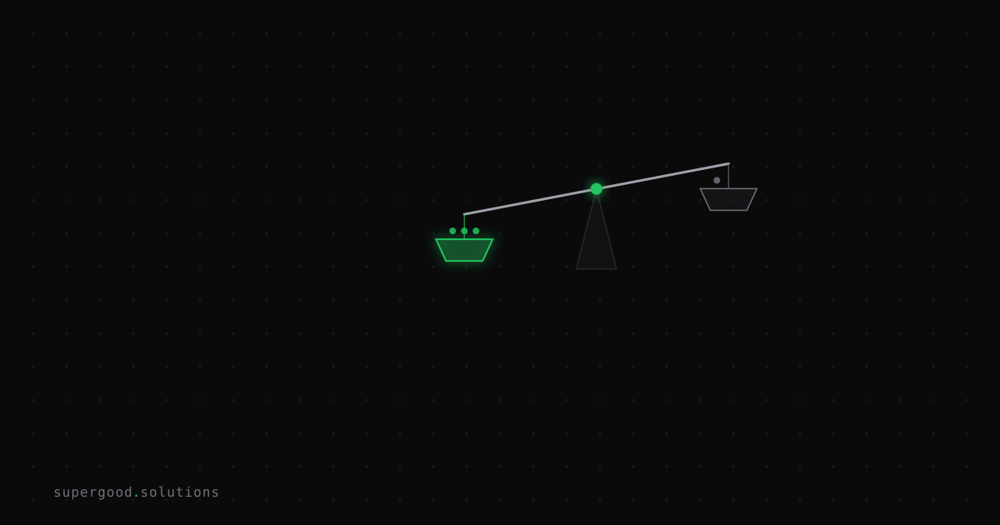

Your AI Safety Defaults Belong to Whoever Bought the Seat
TL;DR: On August 7, Anthropic made auto mode the default in Claude Code for Pro, Max, and Team plans. Enterprise customers were carved out and promised advance notice. That split is the whole story for procurement: the vendor changed the operating mode of a production tool for one class of customer and left the other class alone, and which class you fall into depends entirely on how your developers bought their seats. If they expensed a personal plan, nobody at your company had a say and nobody got told.
Key Insight
Read the Anthropic announcement as a procurement document rather than a safety one and it says something specific. Auto mode (where the agent routes each tool call through a classifier instead of asking a human) became the default for Pro, Max, and Team. For Claude Enterprise, the Claude API, AWS Bedrock, Google Cloud's Agent Platform, and Microsoft Foundry, it stayed opt-in, with a stated plan to flip it later and notify Enterprise admins first. Team admins who had already set a default in managed settings saw no change at all.
That is a vendor behaving responsibly toward its administered customers. The problem is which of your developers are administered customers.
Zylos research this year found that 82% of organizations discovered at least one AI agent or workflow their security team did not know existed, 98% report some form of unsanctioned AI use, and only 13% believe their governance is adequate. Every one of those unsanctioned installs is on an individual plan. There is no managed-settings layer over a seat your company never bought, so there is no carve-out, no admin notice, and no one to receive it.
The change-management exposure is that the notification path for a behavior change in a production developer tool runs through a plan tier, and a large share of your fleet is not on it.
Why Teams Miss This
Vendor risk review treats a software purchase as a point-in-time assessment. You evaluate the product as it behaves during evaluation, document that behavior, and file it. The mental model assumes the thing you assessed is the thing that keeps running.
SaaS broke that assumption years ago and AI tooling breaks it harder, because the settings that change are the ones that define how much autonomy the software has. A UI refresh does not alter your risk posture. A default permission mode does.
The second miss is more specific to this moment. Most enterprise AI policy work in 2026 went into model selection, data handling, and the EU AI Act's August 2 enforcement date. Almost none of it went into asking which contractual relationship each AI tool in the building actually sits under. Teams have an approved-tools list. Very few have a list of which of those tools they can configure.
Anthropic's own usage data shows why the configuration lever matters more than the policy document. As of June 2026, 49.5% of active Claude Code users had manually written a Bash allow-rule, 62% had used bypassPermissions or clicked "don't ask again" on Bash, and 25% of interactive sessions were already starting in bypass permissions mode. Across all users, 97% of permission prompts got approved. Whatever control your policy imagined those prompts were providing, developers had already turned most of it off by hand. Managed settings are the only layer that survives that, and managed settings require an administered seat.
How to Actually Do It
1. Inventory by contract tier, not by tool name.
Pull your approved AI tools list and add one column: what plan is each install actually on. Company-administered, or individual seat expensed back. Finance data is usually a faster path here than an endpoint scan, because a personal Pro or Max subscription shows up as a recurring card charge under a developer's name. Anything in the individual column is a tool whose defaults your vendor sets and you learn about from a changelog.
2. Convert shadow seats before you write another policy.
For any tool that has an administered tier, moving developers onto company seats buys you three things a policy cannot: a managed-settings layer, an admin notification path for behavior changes, and a data-handling agreement. For Claude Code specifically, a Team admin who has set a default in managed settings was unaffected by the August 7 change. That is the entire difference between reading about a default flip and being subject to one.
3. Subscribe a human to the changelogs.
Assign an owner per AI tool whose job is to read release notes and flag behavior changes to whoever owns the risk register. This is dull, low-cost work and almost nobody does it. Vendor release notes are where AI tools now announce changes that older governance processes expected to arrive as a contract amendment.
4. Pin what you can actually pin.
Where a tool exposes configuration as code, check it in and enforce it, so a vendor default change shows up as a diff rather than a surprise.
// .claude/settings.json — committed to the repo, applies regardless of vendor default
{
"permissions": {
"defaultMode": "manual",
"allow": ["Read", "Write", "Bash(git *)"],
"deny": ["Bash(rm -rf *)", "mcp__prod_db__*"]
}
}What We've Learned
On the safety question, the vendor has the better data. In a controlled study with 1,053 paid professional testers, human reviewers caught 13.6% of dangerous commands while auto mode caught 89%, and human performance degraded as sessions ran long, from roughly 17% early to about 5% after fifty prompts. In flagged production sessions from May and June, manually approved sessions contained unrequested production-severity harm 6.3% of the time versus 2.4% for auto mode. Fighting the default on safety grounds means arguing against the only published evidence anyone has.
The thing to fix is the notification gap. Run the tier audit this week. Take your AI tools list, mark each install company-administered or individual, and count the individual column. That number is how much of your AI footprint gets its risk posture set by someone else's product decision.
Sources
- Auto mode is now the default in Claude Code — Anthropic, August 7, 2026
- Simon Willison on Claude Code auto mode
- AI Agent Governance and Compliance in 2026 — zylos.ai research
- EU AI Act regulatory framework — European Commission
Have a specific workflow in mind?
Bring it to a Quick Scan — a live working session where we'll tell you honestly whether it should be an agent, a workflow, or left alone, before you spend a dollar building it. You get 3 prioritized recommendations on the call, a one-page summary after, and the $500 credited toward any engagement within 30 days.
Get new posts + practical agent-ops notes
One email when something new goes up. No nurture sequence, no spam — unsubscribe whenever you want.